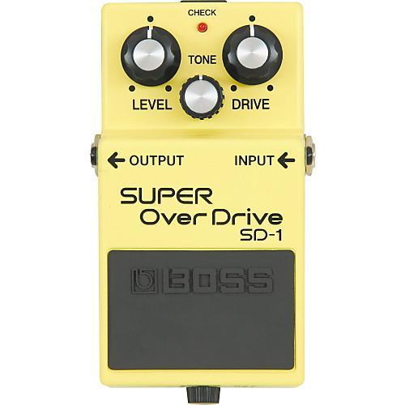

| Here are some common effects pedals | |||
|---|---|---|---|
| Distortion is a very common effect in music, often in rock and metal. | This is a very popular brand of 'fuzz' pedal, which is an effect used frequently in alternative rock. | ||
|  | Overdrive pedals are common in mainly rock and metal, they typically sound similar to distortion pedals, but smoother. | An octave pedal allows the guitarist to play in different octaves by the push of a button. | |